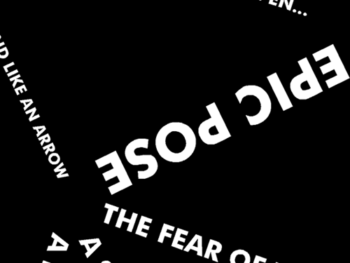

DEATH BECOMES THE ARTIST
YOUNG-HAE CHANG HEAVY INDUSTRIES

YOUNG-HAE CHANG HEAVY INDUSTRIES is yhchang.com. Founded in 1998 by C.E.O. Young-hae Chang (Korea) and C.I.O. Marc Voge (U.S.A.) and based in Seoul, YOUNG-HAE CHANG HEAVY INDUSTRIES has made work in 16 languages and presented much of it at some of the major art institutions in the world.
Click the link to view DEATH BECOMES THE ARTIST; note: the link will open in a new window or tab. View DEATH BECOMES THE ARTIST.
Alpha Tree
a film by mIEKAL aND & Liaizon Wakest

How can YOU resist this discount hot ticket item ready to buy in your local checkout aisle? For a mere $5, you can venture into the spooky & indeterminate world of visual poetry. The alphebetic drift, it's all about the drift. How to spell what is not being said.
Alpha Tree can be viewed at http://driftlessmedia.com/movies/AlphaTree.mov.
NAMELY
Lawrence Upton and John Levack Drever

Quicktime version of a performance piece - visual poems, computer-generated variations on the name "Peter Manson", taken as scores for vocal utterance and electronic treatment, celebrating Manson's 40th birthday.
View NAMELY.
Ergon-logos
Paolo Pedercini / Molleindustria

"A fast paced interactive storytelling piece that tries to be a meta-platform game based on the stream of consciousness of an egodystonic homosexual hero, but it fails miserably and becomes a piece of non-linear kinetic visual poetry written by a teenager obsessed with post-structuralist French philosophy." -- Paolo Pedercini
Ergon-logos can be viewed at http://www.molleindustria.org/ergon_logos/ergon_logos.html.
An artist interview with Paolo Pedercini / Molleindustria
Luke Noonan

How would you describe Ergon/Logos?
I described it as an unidentified playable object and as "a fast paced interactive storytelling piece that tries to be a meta-platform game based on the stream of consciousness of an egodystonic homosexual hero, but it fails miserably and becomes a piece of non-linear kinetic visual poetry written by a teenager obsessed with post-structuralist French philosophy."
Can you describe your creative process for Ergon/Logos? How similar or different was this from your normal process?
The process was really graphic design-driven. I basically composed the two readable spaces as they were some sort of visual poems or futurist Words-in-liberty... Author Bio View Full Article
The ppg256 Perl Primer: The Poetry of Techneculture
Mark Marino

The ppg256 Perl Primer: The Poetry of Techneculture
by Mark C. Marino
perl -le 'sub p{(unpack"(A3)*",pop)[rand 18]}sub
w{p("apebotboyelfgodmannunorcgunhateel"x2)}sub
n{p("theone"x8)._.p("bigdimdunfathiplitredwanwax")._.w.w."\n"}{print"\n
".n."and\n".n.p("cutgothitjammetputransettop"x2)._.p("herhimin
it offon outup us "x2);sleep 4;redo}'
-- Nick Montfort, 256-character Perl Poetry Generator, 3
For my epigraph, I offer you this poem, a work of profound import, of concision, of clarity, elegance. Except it is not a poem. It is a procedure for generating an endless array of poems. We shall teach it in schools. We shall read it aloud. We shall commit to our discrete state and biological memory.
Nick Montfort orginally published Perl Poetry Generator 256 ppg256-1, or version one of the 256-character Perl... Author Bio View Full Article
Phyta
Abraham Parangi

"When I first tried Phyta, a software program developed by Abraham Parangi that’s somewhere between a game and an exercise in evolution, I shouldn’t have been surprised that there are no buttons. In fact, there’s really no guidance for what to do at all. The experience is eerie, and thought-provoking, intentionally vexing and almost irritating. And yet it’s strangely beautiful and seems to be hinting at something deeper than what’s on screen." -- Anthony Clavelli
Phyta can be downloaded from http://playthisthing.com/phyta. Parangi's site is http://www.cambriangames.com.
Black Vines on Slow Time: An Interview with Abraham Parangi
Anthony Clavelli

Buttons are uncool. They predate the digital age and will likely continue to help us use elevators into the future, but for now, we don’t want them on our electronics. It wasn’t always this way. For generations of videogame consoles, the controllers were a breeding ground for buttons. New buttons sprung up anywhere you could reasonably find a finger. But at some point, the way these things go, the button boom declined. Touch-sensitive screens on phones and ATMs, increasingly useful track pads on our laptops, and click wheels on our iPods have made physical buttons almost seem primitive. As technology...
Author Bio View Full Article
** PLEASE REPLY MY BELOVED **
Sandy Baldwin

“In all cases the physical occurrence of an index word is bodily annexed to what the word indicates. Hence ‘you’ is not a queer name that I and others sometimes give you; it is an index word which, in its particular conversational setting, indicates to you just who it is to whom I am addressing my remarks. ‘I’ is not an extra name for an extra being; it indicates, when I say or write it, the same individual who can also be addressed by the proper name…” Gilbert Ryle, *The Concept of Mind*
“My name is Mrs. Mellisa Lewis,” reads the... Author Bio View Full Article
Qartcode: A Statement: Mobile tagging: nomadic writing for expanded reading
Giselle Beiguelman
Mobile tagging: nomadic writing for expanded reading
Mobile Tagging is a phenomenon directly related to the popularization of mobile telephony and the popularization of QR-Codes. It is a kind of writing practice for the reading to be held in transit, based on a bimedimensional bar code - QR-Code (Quick Response Code). In other words, it is nomadic writing for expanded reading.
0) Download a QR-Code reader for you cell phone if you don’t have one
http://www.qrme.co.uk/qr-code-resources/qr-code-readers.html
1) Point your camera
2) Scan: (or download a higher resolution of the QR code here)
{kind=link}
3) Enjoy it
The Digital Poetry Genre
Jorge Luis Antonio

ABSTRACT
This paper aims at showing a brief panorama of the poetry that circulates on computer (hard and floppy disks), CD-ROMs, Internet and sites. This poetry can be named experimental poetry, new visual poetry, digital poetry, internet poetry or new media poetry. Certainly, it constitutes a genre itself: the digital poetry genre, which appears side by side with the many other existing poetry genres (verbal poetry, visual poetry, sound poetry, and so on).
Another aim of this paper is to map the constituents... Author Bio View Full Article